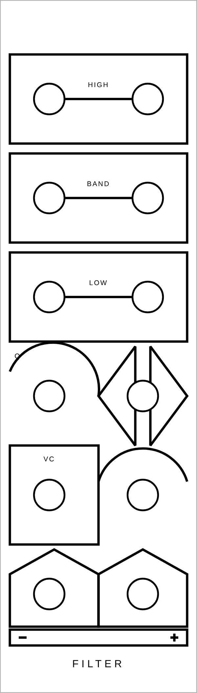
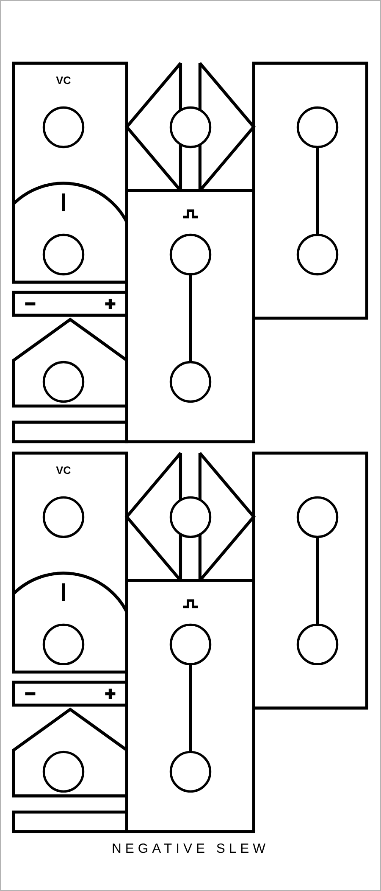
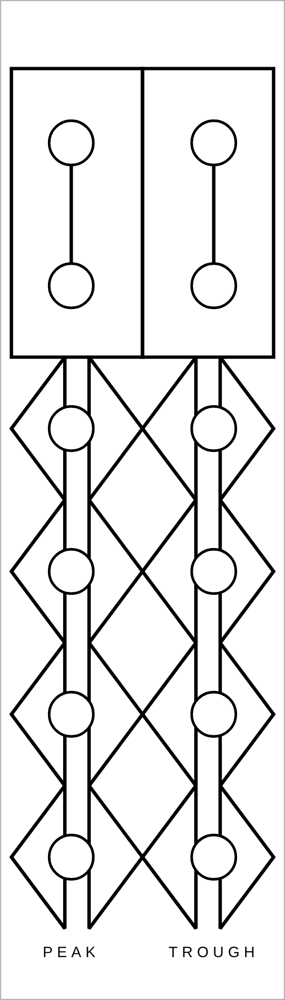
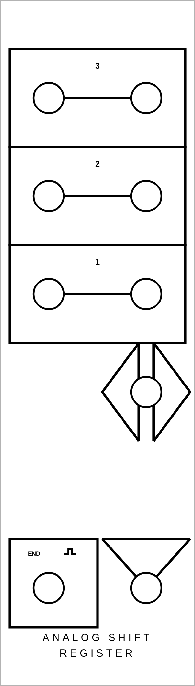
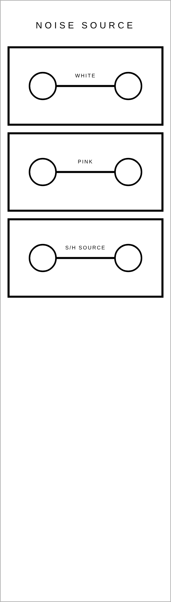
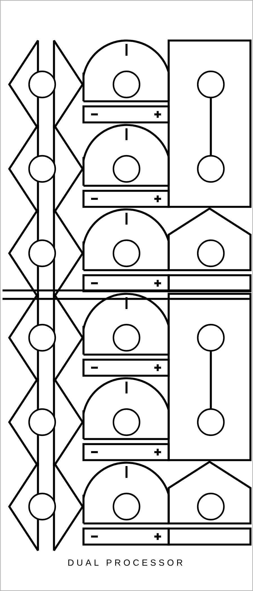
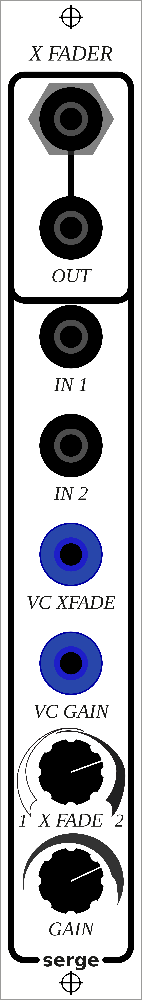
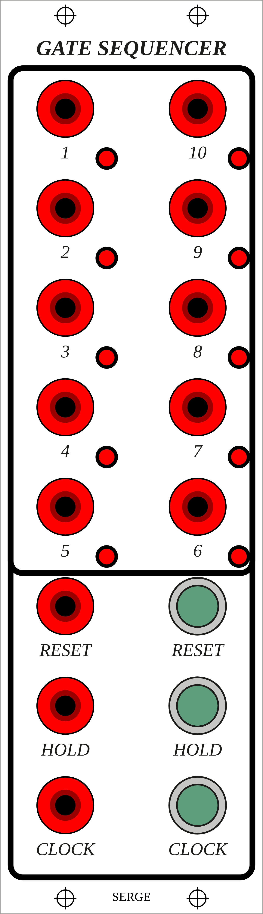
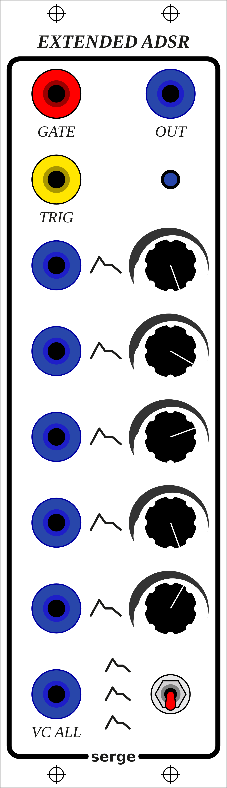

Serge module build pages
For each module: the panels in this repo, how it works, the front-panel hardware, and every known way to build it, with its PCB, schematic and parts list.
Modules
| Module | Function | Build options | |
|---|---|---|---|
 | Universal Audio Processor UAP · LGE208 Two VCAs with an equal-power control circuit, switchable between a dual VCA, a stereo panner and a voltage-controlled crossfader. | Amplitude / mixing / stereo | Ken Stone (CGS), Low-Gain |
 | VC Phaser PHA · Phaser · CGS90 Phaser and Audio Mixers A voltage-controlled phase shifter with three phase-shifted outputs and a built-in mix for the classic notched phasing sound. | Effects | Ken Stone (CGS), Low-Gain, Prism Circuits |
 | Wave Multipliers VCM · CGS113 Three separate voltage-controlled waveshapers that add harmonics to a signal instead of filtering them away. | Timbre / waveshaping | Ken Stone (CGS), Low-Gain |
 | Dual Universal Slope Generator DUSG · DSG · CGS114 Two identical slope generators, each of which can be a slew limiter, envelope, LFO, audio oscillator or pulse divider. | Modulation / envelopes / oscillators | Ken Stone (CGS), Low-Gain |
 | Oscillator (1973) Paperface Oscillator The original paperface VCO: a sine-to-saw waveshaper under voltage control, two frequency inputs, hard sync and AC / DC outputs. | Oscillator | Prism Circuits |
 | VC Filter (1973) Paperface Filter · 1973 VCF · CGS77 A two-pole state-variable resonant filter with simultaneous low-pass, band-pass and high-pass outputs. | Filter | Ken Stone (CGS), Prism Circuits |
 | Triple Comparator Comparator · CGS96 Three comparators for squaring signals, variable-width pulses, level detection and amplitude-based logic. | Logic / waveshaping | Ken Stone (CGS), Prism Circuits |
 | Triple Wave Shaper TWS · CGS85 Three non-linear waveshapers that turn a sawtooth into a sine and, chained, fold waves into richer shapes. | Timbre / waveshaping | Ken Stone (CGS), Low-Gain, Prism Circuits |
 | Ring Modulator Ring · CGS79 An AC or DC coupled ring modulator with voltage control that moves between full ring modulation and amplitude modulation. | Modulation | Ken Stone (CGS), Low-Gain, Prism Circuits |
 | Gate (1973) Paperface Gate · VCA An AC or DC coupled VCA with linear or log response. | Amplitude | Prism Circuits |
 | Negative Slew CGS82 Two sections that slew falling voltages, and with a little patching become voltage-controlled sawtooth oscillators. | Modulation / slew | Ken Stone (CGS), Low-Gain, Prism Circuits |
 | Positive Slew CGS83 Two sections that slew rising voltages, or run as upward-ramp LFOs when their pulse is fed back. | Modulation / slew | Ken Stone (CGS), Low-Gain, Prism Circuits |
 | Smooth & Stepped Generator SSG · Smooth Function / Stepped Function VC Generator · CGS92 A Smooth (slew) section and a Stepped (track-and-hold) section that couple together for random voltages, portamento and oscillators. | Modulation / sample & hold | Ken Stone (CGS), Low-Gain, Prism Circuits |
 | Peak & Trough Hills & Valleys · CGS84 Analog logic: the Peak side passes the highest of its inputs (analog OR), the Trough side the lowest (analog AND). | Logic / analog logic | Ken Stone (CGS), Low-Gain, Prism Circuits |
 | Envelope Generator (1973) CGS76 · R7 '73 EG A rise-and-fall envelope that always completes its cycle, with a CYCLE input for looping. | Envelopes | Ken Stone (CGS), Low-Gain, Prism Circuits |
 | Analog Shift Register ASR · CGS34 A three-stage bucket-brigade sample-and-hold: each clock pulse passes every held voltage on to the next output. | Sample & hold | Ken Stone (CGS), Prism Circuits |
 | Triple Bi-Directional Router Router · CGS88 Three switches that send one input to either of two outputs, or pick one of two inputs, under pulse or voltage control. | Switching / routing | Ken Stone (CGS), Low-Gain, Prism Circuits |
 | Noise Source Noise / Random · CGS97 White and pink noise plus a sample-and-hold source for random voltages, triggered by pulses or a push button. | Noise / random | Ken Stone (CGS), Prism Circuits |
 | Dual Processor Processor Two circuits that add, scale and invert control voltages, each with three inputs and a manual offset. | CV processing / mixing | Low-Gain, Prism Circuits |
 | Dual Mixer Mixer Two mixers, each with three level-controlled inputs and one unity-gain input. | Mixing | Prism Circuits |
 | Sequencer (Ten-Stage Pulse Sequencer) Sequencer · Ten-Stage Pulse Sequencer A ten-stage pulse sequencer with CLOCK, RESET and HOLD inputs and a pulse output per stage. | Sequencing | Prism Circuits |
 | X-Fader X-Fade / Gate · Crossfader A voltage-controlled crossfader between two signals, with a built-in VCA on the result. | Mixing / amplitude | Prism Circuits |
 | Gate Sequencer CGS89 A step sequencer of gates: each stage sends its pulse to a chosen output row. | Sequencing | Ken Stone (CGS), Low-Gain |
 | Extended ADSR CGS116 A voltage-controlled ADSR with an extra stage, keyboard tracking and a shape switch. | Envelopes | Ken Stone (CGS), Low-Gain |
 | Extended Range VCF / Variable Q VCF VCFQ · VCFX · CGS112 Serge's resonant voltage-controlled filter with low, high, band and notch outputs over a very wide range. | Filter | Ken Stone (CGS), Low-Gain |
Where to get parts
| Source | What they offer |
|---|---|
| Elby Designs | Sells the PCBs for Ken Stone's CGS designs. |
| Ken Stone (CGS) | Schematics, parts lists, PCB overlays and construction notes for the CGS designs. |
| Prism Circuits | Paperface-style 4U PCBs (Oscillator, 1973 VCF, ASR, Router, X-Fade / Gate, Send Receive, 10-stage Sequencer and more), drilled panels and power. |
| Low-Gain | 4U Serge-format modules (Loudest Warning-style mounting), assembled or as DIY PCBs with BOMs and schematics on each product page. Some boards will not match other panel layouts, or need extra work to fit them. |
Ken Stone's Serge-derived designs may be built for personal use only; Serge Tcherepnin keeps all rights to his circuits. Schematics, parts lists and PCBs belong to their designers and sellers, so these pages link to them rather than copying them.